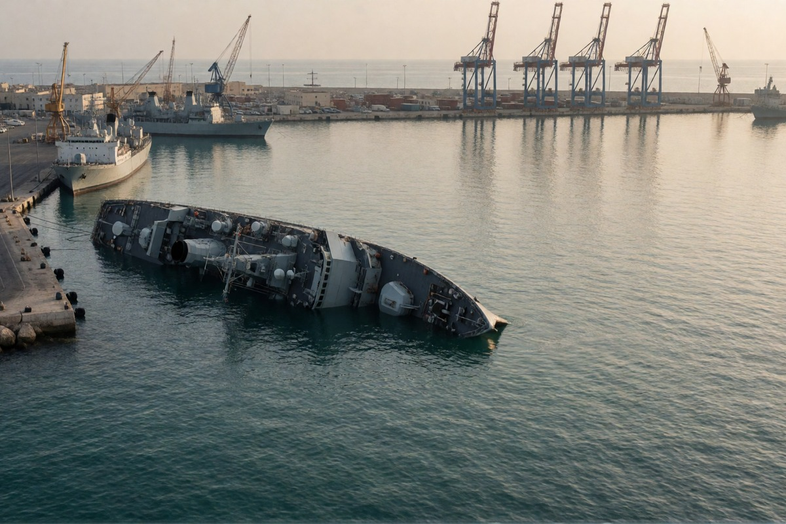

Geopolitica · 22 novembre 2026
Bengasi, una corvetta russa affondata nel porto libico

Le immagini dal satellite mostrano la nave rovesciata accanto al molo. Zelensky rivendica l'attacco con sette droni marini, il governo dell'est libico parla di aggressione alla sovranità e le Nazioni Unite chiedono un'indagine indipendente.
di Franco Zanghì
Una nave da guerra russa è finita sott'acqua nel porto di Bengasi, in Libia, a poche centinaia di chilometri dalle coste italiane. È accaduto fra la notte di sabato 21 e l'alba di domenica 22 novembre 2026. L'Ucraina dice di averla colpita con i suoi droni marini.
Le immagini satellitari della società americana Vantor, diffuse dall'agenzia Associated Press, mostrano la nave rovesciata accanto al molo, con fuori dall'acqua soltanto la prua. Il giorno prima, nelle stesse immagini, risultava ormeggiata regolarmente.
La nave e il rifornimento
Si tratta della corvetta Merkury, della classe Steregushchiy, una nave leggera armata con missili antinave e siluri. Secondo l'Espresso era ferma a Bengasi per fare rifornimento di carburante e di viveri sulla via del ritorno, in base a un accordo di cooperazione marittima fra le autorità della Libia orientale e Mosca.
La rivendicazione di Kiev
Lunedì mattina il presidente ucraino Volodymyr Zelensky ha rivendicato l'operazione, parlando di «operazione ucraina esemplare». Dice di avere impiegato sette droni navali di produzione ucraina; afferma che la Merkury è stata affondata, che un elicottero Ka-27 è stato distrutto e che è stata colpita anche la nave cargo Angara, usata secondo Kiev per trasportare armi. Il servizio di sicurezza ucraino ha diffuso le immagini dei droni.
Sulla provenienza dei droni le fonti sono indirette. Due funzionari militari libici citati dall'Associated Press parlano di una base controllata da forze ucraine nell'ovest del Paese; lo stesso indica un rapporto dell'Institute for the Study of War ripreso da RBC-Ukraine e dall'ANSA. A settembre il governo di Tripoli aveva smentito di avere concesso una base all'Ucraina.
La Libia e le Nazioni Unite
Il governo dell'est, guidato da Osama Hammad e legato al generale Khalifa Haftar, parla di «grave aggressione alla sovranità nazionale», ricorda che la Libia non è parte della guerra fra Russia e Ucraina e ha aperto un'inchiesta in coordinamento con le autorità russe, avvertendo che non permetterà di trasformare i porti e le acque territoriali in un'arena per regolamenti di conti. Da Tripoli il vicepresidente del Consiglio presidenziale, Musa al-Koni, è arrivato a parlare di «dichiarazione di guerra» contro lo Stato libico. La missione delle Nazioni Unite in Libia ha chiesto un'indagine immediata, indipendente e trasparente.
Il Cremlino, sulla Libia, non ha commentato. L'ambasciatore russo a Tripoli, Aydar Aganin, ha detto che gli attacchi non resteranno senza risposta.
Perché ci riguarda
Perché la guerra fra Russia e Ucraina è arrivata nel Mediterraneo, davanti alle nostre coste: il ministro degli Esteri Antonio Tajani, da Baku, ha parlato di un attacco avvenuto a poche centinaia di chilometri dall'Italia. Dalla Libia arrivano in Italia gas e petrolio, e da lì partono molti dei barconi dei migranti. Un porto libico che diventa un campo di battaglia è un problema anche nostro.
Il contesto: dopo la caduta di Gheddafi, nel 2011, la Libia si è spaccata fra il governo di Tripoli, riconosciuto dalle Nazioni Unite, e quello di Bengasi, legato ad Haftar. Secondo diversi analisti la Russia usa l'est libico come ponte verso l'Africa. E due giorni prima, nel Golfo di Finlandia, il cargo russo Sparta II era stato colpito da droni: la guardia di frontiera finlandese li attribuisce all'Ucraina, che non ha rivendicato.
Come la leggo io: l'Ucraina colpisce la marina russa lontanissimo dal Mar Nero, a circa duemilaquattrocento chilometri dal fronte. È un messaggio a Mosca, e dice che le sue rotte verso l'Africa non sono più sicure, nemmeno nei porti degli alleati. Il passaggio da guardare è la risposta russa, e l'indagine chiesta alle Nazioni Unite: se confermerà che i droni sono partiti dall'ovest della Libia, lo scontro fra le due Libie rischia di riaccendersi.
Fonti
- l'Espresso, «Nave da guerra russa colpita da droni ucraini nel porto di Bengasi, in Libia. Zelensky rivendica l'attacco», 23 novembre 2026
- ANSA, «Media ucraini, droni contro nave russa lanciati da base nell'ovest della Libia», 23 novembre 2026
- Notizie Geopolitiche, «Bengasi, l'Ucraina affonda la corvetta russa Merkury con 7 droni navali», 23 novembre 2026
- Associated Press, immagini satellitari Vantor del porto di Bengasi, 22 novembre 2026
- Al Jazeera, 22 e 23 novembre 2026
Sul numero dei droni le versioni non coincidono: Zelensky parla di sette droni navali, mentre funzionari militari libici citati da RBC-Ukraine e dall'Institute for the Study of War parlano di sei droni lanciati, due dei quali avrebbero colpito la corvetta. Entrambe le versioni sono riportate. Il bilancio delle vittime non è ufficiale: l'amministrazione di Bengasi, secondo Notizie Geopolitiche, parla di almeno dieci feriti fra l'equipaggio russo e il personale libico, e nessuna delle fonti consultate riferisce di morti accertati. La base di lancio dei droni nell'ovest della Libia è attribuita a fonti indirette e non è confermata. Il dato sulla distanza dall'Italia è quello usato dal ministro degli Esteri nella sua dichiarazione.